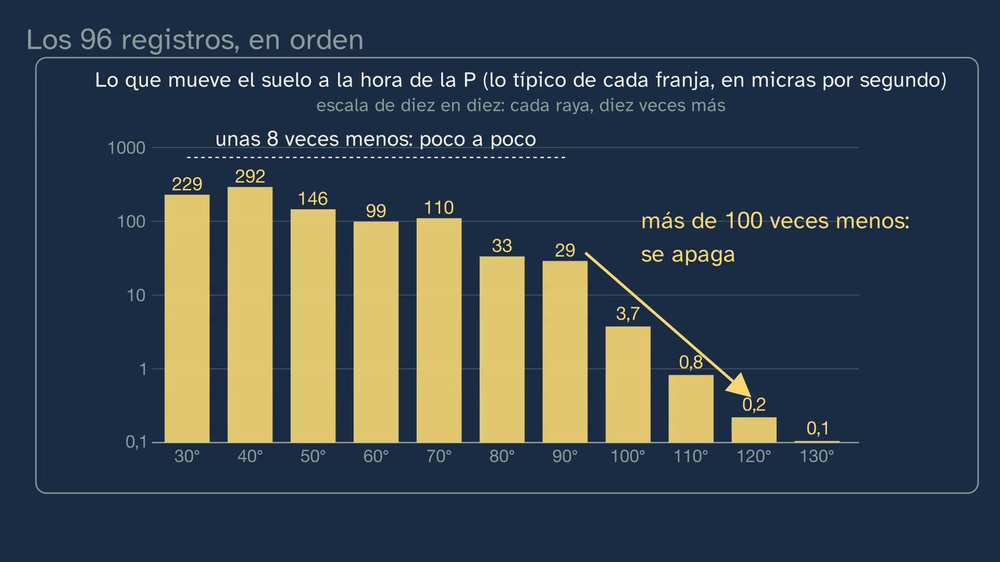
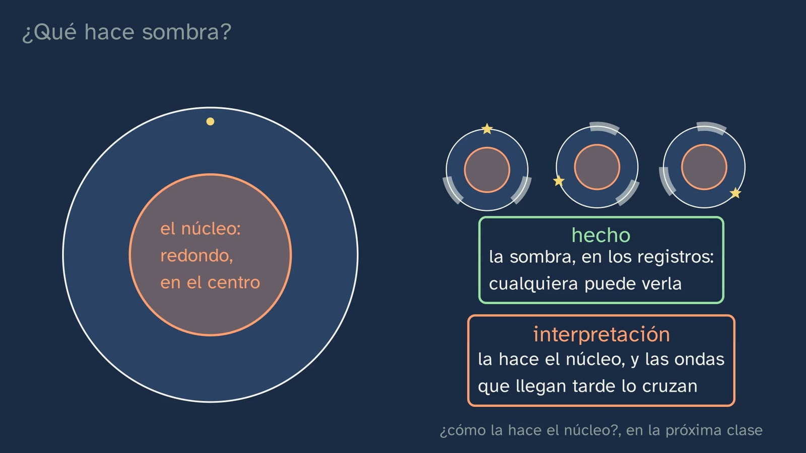

La sombra del núcleo
En pocas palabras
Es la clase de laboratorio del método sísmico, y su laboratorio son datos reales: los sismogramas del terremoto de Fiyi del 19 de agosto de 2018, de magnitud 8,2 y a 600 km de profundidad, registrados en estaciones de todo el mundo y abiertos a cualquiera. La pregunta de la clase es qué se descubre al ordenarlos por distancia, y la respuesta es la zona de sombra del núcleo.
Primero, las herramientas: qué registra un sismómetro (una masa colgada de un muelle que, por su inercia, casi se queda quieta mientras el suelo se mueve) y las dos ondas que viajan por dentro, la P, que empuja y estira, y la S, que sacude de lado y no atraviesa los líquidos, con el porqué. Después, un registro real, el de Hawái, a 44°: la P a los 7 minutos y cuarto, la S casi 6 minutos después, y el mismo registro convertido en sonido. Una comparación en la misma estación de Australia explica por qué se eligió un terremoto profundo: casi no da ondas superficiales, y la P destaca.
El corazón de la clase es la sección: 96 registros reales, el más limpio de cada franja de distancia, puestos uno encima de otro, del más cercano al más lejano. La llegada de la P dibuja una curva que se apaga hacia los 100°, y una gráfica de barras con la fuerza medida lo confirma con números: de 30° a 90° la P se debilita unas ocho veces; de 90° a 120°, más de cien. Llega el control, con una estación española, la de San Pablo de los Montes (Toledo): registra nítida la P de un terremoto a 84° y no la de otro a 113°, aunque en ese mismo registro llegan claras otras ondas. La estación funciona; lo que falta es la P directa. El globo pone la sombra en el planeta, minuto a minuto: un anillo entre unos 100° y 140° que ese día pasó por Nueva York, Moscú y Johannesburgo, mientras a Toledo, a 158°, le llegaba clara la onda que había cruzado el núcleo. La clase se para a pensar qué significa (una Tierra igual por dentro no haría sombra; un anillo igual en todas direcciones y con cualquier terremoto pide algo redondo en el centro), separa el hecho de la interpretación, desmonta la idea de que a la sombra no llega nada y deja dos enigmas para la clase 4.
Objetivo. Al terminar, el alumnado sabrá leer sismogramas reales de un gran terremoto registrado en todo el mundo, distinguir las ondas P de las S y descubrir en esos datos la zona de sombra del núcleo.
Lo que esta ficha añade:
- los matices que la voz no dice: por qué la sombra de los libros es 103–143° y la de estos datos empieza hacia 96–100°, qué llega dentro de la sombra, por qué cada registro va a su escala y qué estaciones se quitaron, y por qué;
- los errores que conviene esperar;
- las soluciones de todo;
- una actividad de unos 20–25 minutos, «La sombra, con tus manos», con la sección impresa y una tabla de llegadas, para que el alumnado encuentre la sombra en los datos;
- el programa que hace la sección, para repetir la actividad con otro gran terremoto profundo, con cuatro terremotos ya probados;
- recursos abiertos para seguir, entre ellos visores de sismogramas en el navegador y los catálogos del USGS y del IGN.
Las palabras. La voz describe las ondas sin darles su nombre técnico, y conviene saber cuál es cada una. «La onda que rodea el núcleo», muy débil, es la P difractada (Pdiff). «Las que rebotan en la superficie» son la PP, que rebota una vez a mitad de camino. «Las que cruzan el núcleo» son la PKP y la PKIKP (la P′ de Inge Lehmann, en la clase 4). La clase dice sismómetro para la pieza que siente el movimiento y sismógrafo para el aparato entero (3:18). La distancia va en grados: el ángulo entre el epicentro y la estación, visto desde el centro de la Tierra; un grado son unos 111 km de superficie (8:19).
Currículo
Real Decreto 243/2022, Biología, Geología y Ciencias Ambientales, texto consolidado del BOE (copia del laboratorio, comprobada para la ficha del tema; su última actualización, del 02/07/2026, sólo toca el artículo 23.4). Los minutos son los del vídeo.
| Elemento | Qué dice el decreto | Dónde se trabaja |
|---|---|---|
| Saber básico (bloque D, «La dinámica y composición terrestres») | «Estructura, composición y dinámica de la geosfera. Métodos de estudio directos e indirectos.» | El método sísmico, el más potente de los indirectos (0:36): el sismómetro (3:18), las ondas P y S (4:04 a 4:54), la sección (8:19 a 10:58), la sombra en el planeta (12:48) y lo que significa: algo redondo y distinto en el centro, el núcleo (14:42) |
| Saber básico (bloque A, «Proyecto científico») | «Experiencias científicas de laboratorio o de campo: diseño, planificación y realización. Contraste de hipótesis. Controles experimentales.» | Dos predicciones antes de ver (5:10 y 8:50); el control con la estación de Toledo, «probar el método donde ya sabemos qué tiene que salir» (11:27 a 12:48) |
| Saber básico (bloque A) | «Métodos de análisis de resultados científicos: organización, representación y herramientas estadísticas.» | Ordenar los registros por distancia (9:16); la fuerza de la P por franjas de 10°, con la mediana de cada una (10:30); el globo con el tamaño de cada punto según su fuerza (12:48). En la actividad, la gráfica tiempo–distancia |
| Competencia específica 1 | «Interpretar y transmitir información y datos científicos, argumentando sobre estos con precisión y utilizando diferentes formatos para analizar procesos, métodos, experimentos o resultados de las ciencias biológicas, geológicas y medioambientales.» | Tres formatos para un mismo resultado: la sección, la gráfica de barras y el globo (9:16 a 14:42) |
| Competencia específica 3 | «Diseñar, planear y desarrollar proyectos de investigación siguiendo los pasos de las metodologías científicas, teniendo en cuenta los recursos disponibles de forma realista y buscando vías de colaboración, para indagar en aspectos relacionados con las ciencias biológicas, geológicas y medioambientales.» Su descripción pide «comprender en profundidad la diferencia entre una impresión u opinión y una evidencia». | «Y no es una impresión del dibujo»: la fuerza medida (10:30); el hecho y la interpretación, en dos cajas (15:39) |
| Criterio 1.1 | «Analizar críticamente conceptos y procesos relacionados con los saberes de la materia, interpretando información en diferentes formatos (modelos, gráficos, tablas, diagramas, fórmulas, esquemas...).» | Leer un sismograma (5:10), la sección (9:16 a 10:58), las barras (10:30) y el globo (12:48) |
| Criterio 3.1 | «Plantear preguntas, realizar predicciones y formular hipótesis que puedan ser respondidas o contrastadas, utilizando métodos científicos y que intenten explicar fenómenos biológicos, geológicos o ambientales.» | La predicción de Hawái (5:10), la apuesta A, B o C (8:50) y la hipótesis del para y piensa: qué puede hacer una sombra así (15:22) |
| Criterio 3.4 | «Interpretar y analizar resultados obtenidos en un proyecto de investigación, utilizando, cuando sea necesario, herramientas matemáticas y tecnológicas, reconociendo su alcance y limitaciones y obteniendo conclusiones razonadas y fundamentadas o valorando la imposibilidad de hacerlo.» | El alcance y los límites de los datos: cada registro va ampliado a su medida (9:16), y por eso hace falta medir la fuerza (10:30); el control (11:27); los libros frente a los datos, porque el borde no es una raya (14:23); lo que es hecho y lo que es interpretación (15:39) |
Lo que añade la actividad de esta ficha. El criterio 1.2, «Comunicar informaciones u opiniones razonadas relacionadas con los saberes de la materia o con trabajos científicos, transmitiéndolas de forma clara y rigurosa, utilizando la terminología y el formato adecuados (modelos, gráficos, tablas, vídeos, informes, diagramas, fórmulas, esquemas y símbolos, entre otros) y herramientas digitales»: el alumnado construye su propia gráfica tiempo–distancia. Y, con el programa, el 4.1, «Resolver problemas o dar explicación a procesos biológicos, geológicos o ambientales, utilizando recursos variados como conocimientos propios, datos e información recabados, razonamiento lógico, pensamiento computacional o herramientas digitales».
Cómo está construida la clase
Capítulos del vídeo
Unos diecinueve minutos, en trece capítulos. Es una clase de laboratorio: Nil va de bata, y el laboratorio son los datos de un sismólogo. Sigue el ciclo de predecir, observar y explicar: dos predicciones, la sección que se construye registro a registro, una prueba con números, un control y la interpretación, separada del hecho. Nil sale a cámara cuatro veces: al saludar (0:00), con el gancho (2:08), a mitad (11:20) y al despedirse (18:52).
| Parte | Qué pasa | Por qué así |
|---|---|---|
| Qué vamos a ver (0:00) | El mapa del tema, con la tercera clase resaltada. | Saber dónde se está. |
| Una pregunta de la clase anterior (0:23) | ¿Qué es un método indirecto? Pausa. Mide algo desde fuera y deduce cómo es la Tierra por dentro: lo que pesa, el campo magnético… y falta uno, las ondas. | Recuperar justo lo que hoy se usa. |
| Las soluciones de la clase anterior (0:58) | Las tres, breves: directos e indirectos; un sexto del volumen y un tercio de la masa; lo bueno y lo malo de un xenolito. | Cerrar lo pendiente sin alargarlo. |
| Un terremoto a seiscientos kilómetros (2:08) | El gancho, a cámara. El foco y la magnitud, en una frase; en veinte minutos, registrado en todo el mundo, y los registros son públicos. La misión, en cuatro pasos (2:45). | Una situación real y una misión con pasos visibles. |
| Las herramientas (3:20) | El sismómetro, como el gravímetro de la clase 2; la foto de unos sismógrafos de 1929 (3:49); las ondas P (4:04) y S (4:21), y por qué la S no cruza un líquido; el muelle, para hacerlo en casa (4:54). | Lo que hay que traer, enseñado desde cero y con su porqué. |
| Leer un sismograma (5:12) | Hawái, a 44°: ¿qué llegará primero, y en qué registro se verá mejor? Pausa. La P a los 7 minutos y cuarto, sobre todo arriba y abajo; la S, casi 6 minutos después, grande también de lado (5:44). El registro de lado, convertido en sonido: acelerado 250 veces y más agudo, para que se oiga la S (6:06). El hueco entre las dos crece con la distancia (6:28). | Predecir antes de ver, con un registro real. El sonido es el mismo dato, para otro sentido. |
| Profundo o superficial (6:51) | Qué son las ondas superficiales frente a la P y la S: nacen de la P y la S que quedan atrapadas junto a la superficie y viajan pegadas a ella; unas hacen rodar el suelo y otras lo sacuden de lado; son las más lentas y se debilitan menos al alejarse, porque sólo se reparten por la superficie. Después, la misma estación de Australia con dos terremotos: el superficial de Kermadec da ondas superficiales once veces mayores que su P; el de Fiyi, a 600 km, menos del doble, porque tan hondo apenas las produce (7:34). | El porqué de la elección del terremoto, que un profesor preguntaría. |
| Todos los registros, en orden (8:20) | Los grados, desde el centro. La apuesta: A, B o C (8:50). Los 96 registros, uno a uno (9:16); qué ves (9:42). La curva de la P (9:53), que se apaga hacia 100° (10:05); la fuerza medida, en barras (10:30); la respuesta: C (10:58). Nil, a mitad (11:20). | El fenómeno, en datos reales, y la prueba con números de lo que la sección sola no puede enseñar. |
| ¿Fallaban las estaciones? (11:27) | El control: Toledo, con Ojotsk a 84° (11:54) y con Mindanao a 113° (12:06). A la hora de la P, casi nada; casi cuatro minutos después, ondas claras (12:22). La estación funciona. | Desconfiar de lo que se ve, y comprobarlo. |
| La sombra en el planeta (12:49) | El globo, minuto a minuto: la P sale a la superficie hasta unos 100° (13:15); desde los 17,5 minutos, las que cruzan el núcleo, con su máximo hacia 145° (13:28); el anillo de sombra; Nueva York, Moscú, Johannesburgo y Toledo (13:57); los libros frente a los datos (14:23). | La sombra, con geografía propia, y la honestidad sobre lo que dice el libro. |
| ¿Qué hace sombra? (14:42) | Una Tierra igual por dentro no haría sombra. El anillo es igual en todas direcciones y con cualquier terremoto. Para y piensa (15:22). Algo redondo en el centro: el núcleo; el hecho y la interpretación (15:39). | Pensar lo que significa un resultado (ADR-099), sin adelantar la refracción. |
| ¿No llega nada? (16:13) | El error que invita a pensar el nombre: a la sombra sí llegan ondas. Dos enigmas para la clase 4 (16:45). | El error, a la vista, desmontado con los propios datos; y ganas de la clase siguiente. |
| Para practicar y seguir pensando (17:15) | La recapitulación; tres ejercicios (17:50); la pregunta abierta (18:28); la clase 4, con «una sismóloga danesa» (18:41); la despedida (18:52). | Las soluciones abren la clase 4. |



Puentes con otras materias. Matemáticas I: «Organización de los datos procedentes de variables bidimensionales» (bloque E), que es la gráfica tiempo–distancia de la actividad, y «Formulación, resolución y análisis de problemas de la vida cotidiana y de la ciencia y la tecnología utilizando herramientas o programas adecuados» (bloque D, pensamiento computacional), que es el programa. Física de 2.º: «Movimiento ondulatorio» y la refracción («Formación de imágenes en medios y objetos con distinto índice de refracción», bloque C), que explicará la sombra en la clase 4. Física y Química de 4.º de ESO: «La luz y el sonido como ondas que transfieren energía».
Lo que hay que traer
- De la ESO (Real Decreto 217/2022). En Biología y Geología de 1.º a 3.º, «La estructura básica de la geosfera»: las capas. Los métodos de estudio, en cambio, están en 4.º («Estructura y dinámica de la geosfera. Métodos de estudio»), que es de opción, igual que los «Controles experimentales (positivos y negativos)». Y la onda como idea sólo está en Física y Química de 4.º, también de opción: «La luz y el sonido como ondas que transfieren energía». Por eso la clase enseña desde cero qué es una onda P y una S, y qué es un control.
- De las clases 1 y 2 del tema: el control con medio kilo de acero (clase 1), que la clase cita en 11:27; el gravímetro, «un peso colgado de un muelle» (clase 2), que vuelve en el sismómetro; los métodos directos e indirectos y el pozo de Kola, 12 262 m, que necesita el ejercicio 1.
- De Matemáticas: leer una gráfica con dos ejes y la mediana.
Plan de una sesión de 50 minutos
Pensado para que el alumnado encuentre la sombra en los datos antes de ver cómo la encuentra el vídeo: el problema antes que la explicación.
| Minutos | Qué se hace |
|---|---|
| 0–2 | Sin vídeo, con la hoja: si un gran terremoto rompe la roca bajo Fiyi, ¿lo registrarán los sismómetros de España? ¿Cuánto tardarán las ondas en llegar? Cada cual apunta su respuesta. |
| 2–12 | Vídeo de 0:00 a 8:50 (si las soluciones de la clase 2 ya se corrigieron, se salta de 0:58 a 2:08). En la pausa de 5:42, la predicción de Hawái, de palabra. |
| 12–14 | La apuesta del vídeo (8:50), sin seguir viéndolo: A, B o C, a mano alzada, y cada cual la apunta. |
| 14–36 | La actividad «La sombra, con tus manos», en grupos (véase más abajo). |
| 36–48 | Vídeo de 8:50 al final. ¿Coincide lo que encontraron con lo que encuentra Nil? En la pausa de 15:33, el para y piensa, en parejas. |
| 48–50 | Los ejercicios y la pregunta abierta, para casa. |
Si hay poco tiempo, el vídeo entero en clase, con sus paradas (unos 22 minutos), y la actividad en otra sesión, como repaso antes de la clase 4.
Notas para el profesorado
Los libros dicen 103–143°; estos datos, unos 96–100°. La voz lo dice en una frase (14:23): en los datos, el borde no es una raya. Lo que hay detrás:
- En un modelo de la Tierra de referencia (iasp91), la P directa llega hasta 96,1° con el foco a 600 km de profundidad, y hasta unos 98° con un foco en la superficie: en un terremoto tan profundo, la sombra empieza un par de grados antes.
- Más allá de ese borde no hay silencio: sigue llegando, cada vez más débil, la P difractada, la que roza el núcleo y lo rodea. Por eso, según dónde se ponga el umbral de «ya no llega», el borde sale en una cifra u otra. En los datos de Fiyi, la P pasa de una mediana de 41 µm/s entre 80° y 95° a 6,6 entre 95° y 100°, a 2,2 entre 100° y 105° y a 0,2 entre 115° y 125° (verificación de la clase).
- Las cifras de los libros salen de dibujos de rayos sobre un modelo: el USGS da de 104° a 140°, y la animación en español de EarthScope dice que la P tangente al núcleo sale hasta 103° y la que lo cruza, desde 143°. Lehmann, en 1936, ya hablaba de «the small P beyond about 100˚».
- Ningún número está mal: describen cosas un poco distintas. Es una buena ocasión para el criterio 3.4, el alcance y los límites de unos datos.
La P difractada. Es lo que llega «a la hora en que tocaría la P» dentro de la sombra (16:14): muy débil, unas cincuenta veces menos que la P justo antes del borde, pero clara en las estaciones tranquilas, de 30 a 470 veces por encima del ruido entre 100° y 118°. En la sección se ve como una prolongación finísima de la curva más allá de 100°, porque cada registro va a su escala (véase más abajo); en las barras de 10:30, como rayitas de 3,7, 0,8 y 0,2 µm/s. La voz dice «una onda muy débil, que rodea el núcleo», y no más: cómo rodea un obstáculo una onda es física de 2.º.
Las ondas del núcleo dentro de la sombra: el enigma de Lehmann. Desde unos 113° (en el modelo, 112,8° con este foco) llega la PKIKP, la onda que atraviesa también el núcleo interno. En los datos de Fiyi la reciben las 17 estaciones que hay entre 113° y 143°, con una fuerza mediana de 16 µm/s (de 2,8 a 37,7): lo mismo, más o menos, que las que están más allá de 151° (15) y que Toledo (14). La clase lo enseña en el globo (13:57) y lo deja como segundo enigma (16:45): si el núcleo hace sombra, ¿qué hacen ahí? Es justo lo que vio Inge Lehmann: en «P′» (1936) escribió que esa onda no se limita a distancias de más de unos 143°, sino que se observa, más débil, hasta unos 105° (citado en Kölbl-Ebert, 2001). De ahí dedujo un núcleo interno donde las ondas van más deprisa. Conviene no contarlo antes de la clase 4, que lo resuelve; y ojo: Lehmann no dijo que el núcleo interno fuera sólido.
El máximo hacia 145°. La voz dice que hacia los 145° las ondas del núcleo llegan «con muchísima fuerza» (13:28). En los datos, de 143° a 151° la mediana es de 127 µm/s (FURI, en Etiopía, a 143,1°, 153; SHEL, en Santa Elena, a 145,1°, 177), ocho veces más que a los dos lados. En el modelo, la PKP, la que cruza el núcleo externo, empieza a llegar a unos 143°, y allí se juntan muchos rayos: es lo que se llama una cáustica, como el punto brillante que hace una lupa. La clase no lo explica, porque necesita la refracción; si un alumno pregunta por qué ahí, la respuesta honesta es «en la clase 4». En el globo, el tamaño de los aros naranjas es proporcional a la fuerza, para que ese máximo se vea; el de los puntos amarillos de la P va de diez en diez, porque la P cambia mucho más con la distancia (unos 3900 µm/s a 3,6° y unos 30 a 90°).
Por qué cada registro va a su escala, y qué implica. El movimiento del suelo cambia muchísimo con la distancia: en la estación más cercana, a 3,6°, la P mueve el suelo a 3919 µm/s; dentro de la sombra, lo que llega a esa hora no pasa de unas décimas de µm/s. Son cuatro órdenes de magnitud: a la misma escala, los registros lejanos serían rayas planas. Por eso la sección amplía cada uno hasta que se ve entero (lo dice la voz en 9:16 y la pizarra, «cada registro, ampliado a su medida»). La consecuencia es que en la sección no se puede comparar la fuerza de dos registros: la onda del núcleo parece igual de grande a 120° que a 145°, y el ruido de una estación tranquila y lejana se ve tan grande como una llegada fuerte de una cercana. Por eso la clase añade las barras (10:30) y el tamaño de los puntos del globo (12:48). En la sección impresa pasa lo mismo, y conviene decirlo antes de la actividad.
Las dos estaciones que no están, y por qué. La sección tiene 96 registros, elegidos automáticamente entre 258 pedidos a 343 estaciones de banda ancha de ocho redes mundiales abiertas: de cada franja de 1,5°, hasta los 96° el de la P más clara, y más allá el que más destaca del ruido. Dos se quitaron a mano, y el programa lo dice:
- IU.TARA (isla de Tarawa, Kiribati, a 21,4°): ese día, su P no pasaba de 4,1 veces el ruido. Dentro de la sección habría dibujado un hueco falso en la curva, y un alumno podría haber contestado «la P se apaga a los 21°». Una estación en una isla tiene mucho ruido del mar.
- GE.SNAA (Sanae, en la Antártida, a 90,2°): su P mide unos 1623 µm/s, unas cuarenta veces más que sus vecinas (de 25 a 80), aunque sus metadatos son normales. Lo más probable es un error en la respuesta del aparato que se publica con los datos. Habría subido la mediana de la barra de 90° (35 en lugar de 29) y el tamaño de su punto en el globo.
- Toledo (IU.PAB) no está entre los 96: en su franja quedó otra estación más limpia. Lo que la clase dice de Toledo con el terremoto de Fiyi (13:57) sale de su propio registro, tratado aparte, y así se dibuja su aro en el globo: está a 157,9° y le llega una onda del núcleo de 14 µm/s, hacia los 18,8 minutos.
La S también tiene sombra, y mayor. La clase no lo dice, a propósito: es un ejercicio de la clase 4 («¿por qué la sombra de las S es mayor que la de las P?»). Lo que conviene saber: la S directa deja de llegar hacia los 100° (en el modelo, a 96,9° con este foco), como la P, pero más allá no vuelve como S en ninguna parte, porque el núcleo externo, líquido, no la deja pasar (USGS; EarthScope; Earthlearningidea, «Shadowlands»). Su sombra va de unos 100° hasta el otro lado del planeta. En la sección, además, la S casi no se ve: el filtro de 0,5 a 2 vibraciones por segundo deja pasar bien la P, y la S tiene periodos más largos. Por eso la S se enseña con el registro de Hawái, filtrado de otra manera (de 0,03 a 0,5 Hz).
El sonido de 6:06. Es el registro real de Hawái de lado (la componente transversal, la que dibuja «2 · de lado»), en la misma banda que se ve en la pizarra (de 0,03 a 0,5 vibraciones por segundo), acelerado 250 veces (dieciocho minutos caben en 4,3 s) y subido cuatro octavas sin cambiar su duración. Por qué así: acelerado sin más, todo quedaría entre 7 y 125 Hz, demasiado grave para oírse; subido de tono, la S suena hacia 400 Hz y la P, más aguda, hacia 1000–2000 Hz. Se usa el registro de lado porque ahí la S es mucho mayor que la P (7,6 veces en esa banda). Medido con un modelo de sonoridad (Zwicker, ISO 532-1), la S suena unas dos veces más fuerte que la P, y la P, muy por encima del ruido de antes. En un primer borrador, con el registro vertical y otra banda, la S no se oía o sonaba igual que la P: el filtro se comía la S. La voz lo dice: «aun así sonaría demasiado grave, así que lo hacemos más agudo». Se oye bien con o sin auriculares.
Kermadec frente a Fiyi (6:51). Los dos registros son de la misma estación australiana (IU.CTAO), a 33,6° y 34,3°, filtrados entre 0,05 y 1 Hz. En el superficial de Kermadec (04/03/2021, a unos 29 km, magnitud 8,1), lo tardío llega a 730 µm/s frente a 65 de la P: once veces. En el de Fiyi, 255 frente a 180: 1,4 veces. El USGS lo resume así: los terremotos de foco profundo causan menos daños en la superficie que los superficiales de magnitud parecida, aunque los grandes se sienten muy lejos.
El control de Toledo, con los números. Con el terremoto del mar de Ojotsk (24/05/2013, 598 km, magnitud 8,3), Toledo estaba a 83,6°, y la P llega a los 11,44 minutos, con 33,5 µm/s, unas 480 veces el ruido. Con el de Mindanao (23/07/2010, 22:51 UTC, 578 km, magnitud 7,6), a 113,5°, a la hora de la P sólo llegan 0,20 µm/s frente a un ruido de 0,05; la onda que cruza el núcleo, 3,8 minutos después, da 1,2, y la que rebota una vez en la superficie, 3,3: diecisiete veces lo que llega a la hora de la P. Dos detalles por si alguien pregunta:
- El de Mindanao era «algo más pequeño», dice la voz (12:06): 7,6 frente a 8,3, que en momento sísmico son unas once veces menos. Por eso el control no se apoya en comparar los dos registros, sino en el propio registro de Mindanao: si llegan claras las ondas de casi cuatro minutos después, el terremoto daba para que llegara la P.
- Ese día hubo en Mindanao tres terremotos profundos (a las 22:08, magnitud 7,3; a las 22:51, 7,6; a las 23:15, 7,5). El de la clase es el de las 22:51, y en los minutos que se miden no entra ninguna onda del de las 23:15.
Las fechas, en hora universal. El terremoto de Fiyi fue el 19/08/2018 a las 00:19 UTC (en Fiyi, a mediodía del mismo 19). Algunas páginas del USGS lo fechan el 18 de agosto, que es la fecha en los husos horarios de Estados Unidos, y el visor de sismogramas de EarthScope puede enseñar la hora desplazada (véase «Recursos abiertos»). El foco a 600 km es el del catálogo del USGS, donde empezó la rotura; otras soluciones del mismo terremoto sitúan el centro de la rotura hacia los 555–580 km (verificación de la clase).
Por qué hay terremotos a 600 km. Pasan dentro de las placas que se hunden en el manto. El de Fiyi, según el USGS, «is related to faulting within the subducted Pacific slab», y el de Ojotsk, del mismo modo, en la placa del Pacífico hundida bajo el mar de Ojotsk, y es, según el USGS, el mayor terremoto profundo registrado. Es materia del tema 2. Y hay uno cerca: bajo Granada se producen terremotos a más de 600 km, como el del 11/04/2010, de magnitud 6,3, a unos 610–620 km (USGS; EMSC), que casi no se sintió en superficie.


Errores típicos y cómo se tratan
Con una advertencia honesta: no conocemos ningún estudio que los haya medido con alumnado español de Bachillerato. El primero lo prevé la ficha del tema; los demás, el diseño de la clase.
- «A la zona de sombra no llega nada», o «allí no tiembla». Lo invita a pensar el propio nombre, y la clase lo desmonta mirando otra vez los registros (16:14): a la hora en que tocaría la P llega una onda muy débil que rodea el núcleo; después, claras, las que rebotan en la superficie; y desde unos 115°, las que cruzan el núcleo. Lo que desaparece es la P directa. En la actividad se ve en la tabla: KBL (Kabul, 118,7°) no tiene P directa, pero le llega una onda del núcleo de 24 µm/s.
- «Si una estación no registra la P, es que está rota.» Es el ejercicio 3, y el control de la clase (11:27) lo responde: la misma estación registra la P de otros terremotos, y en su propio registro llegan claras otras ondas. Conviene añadir la otra cara: a veces sí es el aparato o el ruido de ese día, como en Tarawa, y por eso se comprueba.
- «La sombra la hace un núcleo opaco», o «vacío». «Sombra» invita a pensar en algo que no deja pasar nada. La clase lo frena con el primer enigma (16:45): las ondas cruzan el núcleo, y aun así hay sombra. La respuesta, la refracción, es de la clase 4, que tiene como error típico «si las ondas S no pasan, es que el núcleo está vacío».
- «La P viaja por la superficie.» En el globo, el frente amarillo avanza sobre la superficie, y se puede leer como una ola que recorre el planeta. La voz se adelanta (12:48): la P viaja por dentro, y el globo sólo enseña dónde va saliendo; la pizarra lo rotula. Si alguien lo dice, un dibujo de dos rayos curvos que bajan y suben lo aclara.
- «En la sección, lo que más se mueve es lo más fuerte.» Cada registro va a su escala (véase la nota). Pregunta para comprobarlo: «¿le llega a la estación de 150° más fuerte la onda del núcleo que a la de 120°? ¿Cómo lo sabríais?». En la sección no se puede saber; en la tabla de la actividad, sí (132 frente a 24 µm/s).
- «Lo primero que llega es lo más fuerte», o «la S sólo se ve de lado». En Hawái, la S es casi el triple de la P, y también se ve arriba y abajo (477 µm/s frente a 532 de lado). Lo que la P tiene de especial es que llega antes.
- «Los grados son de latitud.» La distancia en grados es un ángulo visto desde el centro de la Tierra, entre el epicentro y la estación, no una diferencia de latitudes: Toledo está a 39,5° de latitud norte y a 157,9° de Fiyi. Un grado son unos 111 km por la superficie (2π · 6371 / 360 = 111,19).
Preguntas y soluciones
Dentro del vídeo
- ¿Qué es un método indirecto? Pon un ejemplo (0:23; la pausa, en 0:31). Un método que mide algo desde fuera y deduce de esa medida cómo es la Tierra por dentro. Ejemplos de la clase 2: lo que pesa el planeta (su densidad media), el campo magnético, la gravedad punto a punto, la temperatura de los pozos, las ondas de los terremotos y, por comparación, los meteoritos. Lo que saldrá: «los meteoritos son directos, porque se tocan»; no son de la Tierra.
- ¿Qué crees que llegará primero, y en cuál de los dos registros se verá mejor? (5:10; la pausa, en 5:42). Primero, la P. Se ve mejor en el registro de arriba y abajo (190 µm/s, frente a 70 de lado), porque llega desde abajo, empujando en la dirección en que avanza. La S, en cambio, es grande en los dos. Es una predicción: lo que interesa es el porqué de cada cual.
- Apuesta: a todas partes, igual de fuerte; a todas partes, pero cada vez más débil; o hasta cierta distancia, y ahí se apaga (8:50; la pausa, en 9:11). La C. La B es una idea razonable, porque una onda se debilita al alejarse, y la gráfica de 10:30 la desmonta con números: de 30° a 90° la P se debilita poco a poco, unas ocho veces (229 frente a 29 µm/s, medianas de 10° en 10°); pasados los 90°, en sólo treinta grados, más de cien (29 frente a 0,22).
- Míralo bien: qué ves, y qué te llama la atención (9:42; la pausa, en 9:47). Pregunta abierta, de pensamiento visible. Lo esperable: la curva de las primeras llegadas, que se acaba hacia los 100°; otra rama, más tarde y casi vertical, arriba; registros que empiezan a moverse tarde. Vale cualquier observación que se apoye en lo que se ve. Funciona bien con la rutina «¿qué ves?, ¿qué piensas?, ¿qué te preguntas?».
- ¿Qué puede hacer una sombra así, igual en todas direcciones y con cualquier terremoto? (15:22; la pausa, en 15:33). Algo redondo, en el centro de la Tierra y distinto del resto: el núcleo. Criterios: que la respuesta use la forma de la sombra. Igual en todas direcciones quiere decir que el obstáculo está en la línea entre el terremoto y el centro; igual con cualquier terremoto, que es el mismo para todos, y lo más sencillo que cumple las dos cosas es una esfera centrada. Que diga, además, que es una interpretación (15:39).
- Los dos enigmas (16:45): ¿cómo hace sombra algo que las ondas atraviesan?, y ¿qué hacen dentro del anillo, desde unos 115°, ondas que han cruzado el núcleo? No se contestan hoy. Para el profesorado: el primero se resuelve con la refracción (la P va más despacio en el núcleo externo, se tuerce al entrar y al salir, y deja un hueco); el segundo, con el núcleo interno de Lehmann. Los dos son de la clase 4. Si alguien propone «el núcleo tuerce las ondas», es una hipótesis excelente: se apunta y se comprueba en la clase 4.

Para practicar (las soluciones abren la clase 4)
- El foco del terremoto de Fiyi estaba a 600 km de profundidad. ¿Cuántas veces más hondo que el pozo más profundo que se ha perforado nunca (12 262 m)? 600 / 12,262 = 48,9: unas 49 veces, casi cincuenta. Con todo en metros, 600 000 / 12 262, sale lo mismo. Criterios: las dos cantidades en la misma unidad. Lo que saldrá: 600 / 12 262 = 0,049, por mezclar kilómetros con metros, y la división al revés (12,262 / 600 = 0,02). La idea que queda: las ondas llegan a donde no llega ningún pozo. Espacia con la clase 2.
- En la sección de registros, ¿cuánto tarda la onda P en llegar a una estación a 60°? Unos 9 minutos. El modelo iasp91 da 9,16 minutos (9 minutos y 10 segundos), y en la estación de Scott Base, en la Antártida, a 60,2°, la llegada medida es de 9,14. Se acepta de 8,5 a 9,5, porque se lee a ojo en una figura. En el vídeo, la pizarra pone la sección grande con una raya en 60° (17:50); con la sección impresa y una regla se lee mejor. Lo que saldrá: leer la hora de una llegada posterior del mismo registro, y confundir los 60° con 60 minutos.
- ¿Por qué una estación que no registra la P de un terremoto no está necesariamente rota? Porque puede estar en la zona de sombra de ese terremoto, más allá de unos 100°, adonde la P directa no llega. Se comprueba con un control: si la misma estación registra con claridad la P de otros terremotos más cercanos (Toledo con Ojotsk, a 84°), o si en su mismo registro llegan claras otras ondas más tarde (Toledo con Mindanao), la estación funciona y lo que falta es la onda. Criterios: la sombra y, sobre todo, una manera de comprobarlo. Si alguien añade que también puede ser el ruido de ese día o un fallo del aparato, mejor: por eso se comprueba (véase Tarawa, en las notas).

De la hoja del alumnado
- Antes de ver el vídeo. Sí: un terremoto de magnitud 8,2 se registra en todo el mundo, y a España, a unos 156–158° de Fiyi, las primeras ondas llegaron unos 19 minutos después (en el modelo, 18,8 minutos a 158°). El pozo es el de Kola, en el noroeste de Rusia, de la clase 2: 12 262 m, y lo necesita el ejercicio 1. La tercera pregunta es una predicción.
- Mientras ves el vídeo. Son los para y piensa de arriba, en el orden del vídeo, y algunas más:
- el sismómetro: la masa colgada del muelle casi se queda quieta por su inercia, la tendencia a seguir como estaba, y el aparato registra cuánto se mueve el suelo respecto a ella;
- la P empuja y estira la roca en la dirección en que avanza, y es la más rápida; la S la sacude de lado, va más despacio y no atraviesa los líquidos, porque un líquido no tira para volver a su forma;
- en Hawái, la P llega a los 7 minutos y cuarto, y la S, casi 6 minutos después; el hueco crece con la distancia;
- un terremoto profundo casi no da ondas superficiales, que nacen sobre todo cuando la roca se rompe cerca de la superficie, así que la P destaca;
- 60° son unos 6700 km (60 · 111,19 = 6671);
- de 30° a 90°, la P llega unas ocho veces más débil; de 90° a 120°, más de cien; la gráfica hace falta porque en la sección cada registro va a su escala;
- un control es probar el método donde ya se sabe qué tiene que salir;
- el anillo, entre unos 100° y 140°; dentro, Nueva York, Moscú y Johannesburgo; Toledo, a 158°, más allá;
- los libros y los datos: el borde no es una raya, y con un foco tan profundo la P se apaga un poco antes;
- el hecho, la sombra en los registros; la interpretación, que la hace el núcleo y que las ondas tardías lo cruzan;
- a la sombra llegan la onda débil que rodea el núcleo, las que rebotan en la superficie y, desde unos 115°, las que cruzan el núcleo.
- La actividad y el «Hazlo tú»: sus soluciones, en «Una actividad para el aula».
Para seguir pensando. La sismología nació para estudiar los terremotos y acabó descubriendo el centro del planeta. ¿Será lo normal en ciencia, encontrar lo que no se buscaba? No tiene respuesta de libro, y ni el vídeo ni esta ficha dan la suya. Algunas pistas para orientar el debate sin cerrarlo:
- Encontrar sin buscar no es lo mismo que encontrar por casualidad. La sombra estaba en los registros, pero sólo aparece al ordenarlos y al mirarlos con cuidado; Lehmann encontró el núcleo interno en unas ondas que no debían estar allí (clase 4). ¿Es casualidad, o hace falta estar mirando?
- ¿Es lo normal o es lo que recordamos? ¿Se cuentan más las sorpresas que los resultados que confirman lo esperado? ¿Cómo podríamos saber cuántos descubrimientos fueron inesperados?
- Un hallazgo inesperado vale si se comprueba. Es lo que hace la clase con Toledo: antes de creer que la P se apaga, se descarta que la estación falle.
- El profesor modera y no da su veredicto; vale el argumento, con un ejemplo que se pueda comprobar.
Una actividad para el aula
La sombra, con tus manos (unos 20–25 minutos, en grupos de tres o cuatro). El alumnado encuentra la sombra en los datos antes de ver cómo la encuentra el vídeo, o la repasa después. Trabaja los criterios 1.1, 1.2, 3.1 y 3.4.
Material:
- la sección impresa (
materiales/seccion.png): cabe en un A4 vertical, y en A3 se lee mucho mejor; una copia por grupo; - la tabla de llegadas de la hoja del alumnado, con 29 de las 96 estaciones, sacada de
materiales/llegadas.csv(la tabla completa, con las 96, se puede descargar); - papel milimetrado, regla y lápices de dos colores.
Los datos, en una frase: «llegada de la P» es el primer momento en que el suelo se mueve más de cuatro veces el ruido de antes del terremoto, cerca de la hora que da el modelo; «fuerza» es la velocidad máxima del suelo en esa llegada, en micras (milésimas de milímetro) por segundo, µm/s. Las dos las mide el programa, solas.
- La predicción (2 minutos). Si no se ha visto aún el vídeo desde 8:50, cada cual elige A, B o C: ¿hasta dónde llegará la P?
- A ojo, en la sección (5 minutos). Con la regla, en seis registros (cerca de 10°, 30°, 60°, 90°, 110° y 150°), marcar dónde empieza a moverse la línea y leer el minuto en el eje. ¿En cuáles cuesta? Antes de empezar, recordar que cada registro va ampliado a su medida: el tamaño de las ondas no se puede comparar.
- La gráfica (8 minutos). En el papel milimetrado, los minutos en horizontal (de 0 a 20, un centímetro por minuto) y la distancia en vertical (de 0° a 180°, un centímetro por cada 10°), como en la sección, para poder ponerlas al lado. Con un color, la llegada de la P de cada estación; con el otro, la llegada de la onda que cruza el núcleo. ¿Dónde se acaba la primera curva? ¿Dónde empieza la otra rama, y cuánto más tarde?
- La fuerza (5 minutos). En la columna «lo que llega a la hora de la P»: ¿a partir de qué distancia baja de 1 µm/s? ¿Cuántas veces más débil le llega a ARU (123,2°) que a ULN (93,6°)?
- Concluir (3–5 minutos). ¿Entre qué distancias queda el anillo de sombra? ¿Está rota la estación de Kabul? ¿Coincide con lo que dice vuestro libro?
Lo que se puede esperar.
- En la sección, la P se marca sin problema hasta los 90°; a 110° cuesta, y lo que se ve empieza bastante más tarde de lo que daría la curva; a 150° lo primero llega hacia los 18,5 minutos.
- La curva de la P va de 1,2 minutos a 3,6° hasta 12,4 minutos a 95,7° (LCO, Las Campanas, Chile), y se acaba ahí: más allá, ninguna estación tiene P directa. La segunda rama empieza en KBL (Kabul, 118,7°) a los 17,4 minutos y llega a 19,0 minutos a 174,2°: unos cinco minutos a la derecha de donde se acabó la primera, y casi vertical.
- Si alguien se fija en la forma: la curva no es una recta, sino que se va tumbando (de 30° a 60°, la P tarda 3,8 minutos más; de 60° a 90°, sólo 2,8). Las ondas que van más lejos bajan más hondo, donde la roca transmite la P más deprisa; es la curva de velocidades de la clase 5.
- La fuerza baja de 1 µm/s a partir de CPUP (107,4°, 0,83); entre ULN (30) y ARU (0,21) hay unas 140 veces. Cerca del borde, CCM (98,7°, 3,8), WVT y LPAZ (2,2) aún reciben algo: es el borde difuso. El programa deja de llamar «P directa» a lo que llega más allá de 96°, donde la corta el modelo, y CCM todavía recibe una llegada clara; más allá, lo que llega es la P que rodea el núcleo, cada vez más débil.
- El anillo, con estos datos, entre unos 100° (o 96°, donde se acaba la P directa) y unos 143° (donde la onda del núcleo se dispara: SHEL, 177 µm/s; GRFO, 132). Más allá de 151°, la onda del núcleo vuelve a unos 15–60 µm/s.
- Kabul no está rota: no le llega P directa, pero la onda del núcleo le llega con 24 µm/s, cien veces más que lo que le llega a la hora de la P. Es el ejercicio 3 con datos.
- Dos puntos se salen un poco, y es bueno que se vean: las llegadas están picadas por el programa, y se pueden equivocar en unos segundos (en la tabla completa, AIS se retrasa 12 s; en la de la hoja, GRFO se adelanta otros 12 respecto al modelo). De las 53 P picadas de la sección, 48 caen a menos de 7 s del modelo.
Criterios: ejes rotulados, con unidades; los dos colores, con su leyenda; la conclusión, apoyada en los datos («en la tabla, la P directa no aparece más allá de 95,7°»), y la diferencia con el libro, explicada y no tachada de error.
Para ampliar, el control de Toledo en números. Con el terremoto de Ojotsk, Toledo está a 83,6° y la P llega a los 11,44 minutos, con 33,5 µm/s: cae justo en la curva. Con el de Mindanao, a 113,5°, a la hora de la P le llegan 0,20 µm/s, y 3,8 minutos después, la onda del núcleo, con 1,2. ¿Dónde caen esos dos puntos en vuestra gráfica?
Otra opción, sin papel: las «moléculas humanas». La ficha 77 de Earthlearningidea, en español, hace las ondas P y S con una fila de alumnos: con los brazos rígidos sobre los hombros del de delante (un sólido), pasan la P, con un empujón suave, y la S, con un balanceo de lado; con los brazos bajados (un fluido), pasa la P, pero no la S. Son cinco minutos, y fijan lo de 4:21. Con empujones suaves, y avisando al de delante.
«Hazlo tú», en casa o en clase. Con un muelle de juguete estirado sobre el suelo o una mesa larga, y alguien que sujete el otro extremo: empujar un extremo adelante y atrás da una onda P; agitarlo de lado, una S. Lo esperable: en la P, las espiras se juntan y se separan a lo largo del muelle; en la S, el muelle se ondula de lado. A la última pregunta de la hoja: el muelle enseña bien cómo se mueve cada onda respecto a la dirección en que avanza; que la S no atraviese un líquido no lo puede enseñar, y para eso están las «moléculas humanas». La ficha 304 de Earthlearningidea, en español, tiene más variantes, con el muelle colgado y con dos muelles para las ondas superficiales.
Repetir la actividad con otro terremoto
El programa que hizo la sección y la tabla de la clase, materiales/sismogramas.py, está abierto: se puede leer, y repite todo con cualquier gran terremoto profundo, con datos reales de las redes mundiales. Pide al USGS el origen del terremoto, pide a EarthScope los registros, elige el más limpio de cada franja de 1,5° y devuelve la sección en PNG y la tabla de llegadas en CSV.
Qué terremotos sirven. Profundos, con el foco a más de unos 500 km (el programa da por hecho que la P directa llega hasta unos 96°, como con un foco de 600 km), y de magnitud 7 o más; con 7,5 o más, las secciones salen más limpias. El USGS llama de foco profundo a los de más de 300 km. Estos cuatro están comprobados: los hemos pasado por el programa el 08/10/2026, y los cuatro enseñan la sombra.
| Código del USGS | Terremoto | Lo que sale |
|---|---|---|
usb000h4jh |
Mar de Ojotsk, 24/05/2013, 598 km, magnitud 8,3 (el del control de Toledo) | 77 registros; la P directa, hasta 93,1°. Toledo, a 83,6°, con su P a los 11,41 minutos |
us20002ki3 |
Islas Bonin (Japón), 30/05/2015, 664 km, magnitud 7,8 | 84 registros; la P directa, hasta 94,8°. Toledo cae dentro de la sombra, a 105,1°: a la hora de la P, 0,77 µm/s |
us2000h9e2 |
Fiyi, 06/09/2018, 671 km, magnitud 7,9: tres semanas después del de la clase | 91 registros; la P directa, hasta 94,8° |
us7000myfa |
Mindanao (Filipinas), 11/07/2024, 640 km, magnitud 7,1 | 85 registros; la P directa, hasta 95,1°. Más ruidoso, pero la sombra se ve |
Para buscar otros: en el catálogo del USGS, magnitud mínima 7 y, en Advanced Options, profundidad mínima de 500 km. El código es lo que sale en la dirección de la página de cada terremoto, detrás de eventpage/.
Instalarlo (una vez). Hace falta Python, y hay dos caminos.
Con uv, lo más sencillo. uv instala Python y lo que necesita el programa, que lo lleva escrito en su cabecera. Se instala con una línea (instrucciones oficiales): en macOS o Linux, en el Terminal,
curl -LsSf https://astral.sh/uv/install.sh | sh
y en Windows, en PowerShell,
powershell -ExecutionPolicy ByPass -c "irm https://astral.sh/uv/install.ps1 | iex"
Después, en la carpeta donde se haya descargado sismogramas.py:
uv run --script sismogramas.py us20002ki3
Con pip, si ya hay Python 3.12 o posterior:
pip install obspy
python sismogramas.py us20002ki3
ObsPy, la biblioteca de sismología de código abierto que usa el programa, trae con ella NumPy, SciPy y Matplotlib.
Qué esperar.
- La primera vez tarda unos minutos, porque instala; después, con buena conexión, menos de un minuto por terremoto. Baja unos 45 MB de registros por terremoto, que guarda en una carpeta
descargas/junto al programa y no vuelve a pedir. - Escribe, en inglés, avisos de ObsPy («UserWarning: Skipping empty trace…», «A suitable encoding will be chosen…»): no son errores.
- Deja la sección y la tabla en una carpeta
salida-<código>/, junto al programa. - Sin código, rehace el terremoto de Fiyi de la clase (
us1000gcii); con otro código, el terremoto que se le pida.
Al leer una sección nueva, dos avisos.
- La selección es automática: alguna vez se cuela un registro con un temblor local o un fallo del aparato. Con el terremoto de Bonin, por ejemplo, la estación de Boaco (Nicaragua, a 119,8°) tiene una sacudida enorme hacia los 12,8 minutos que no sigue ninguna curva. Es una buena pregunta para el alumnado: ¿es la P? ¿Cómo lo sabríais?
- La tabla separa las columnas con punto y coma y usa la coma decimal, así que se abre bien en una hoja de cálculo configurada en español. Los nombres de los lugares van en inglés, como los dan las redes.
Sin instalar nada, el visor de sismogramas de EarthScope hace secciones de los grandes terremotos desde 2010, el de Fiyi incluido, en el navegador (véase «Recursos abiertos»).
Cada sección o tabla que se publique o se reparta debe citar los datos: «Datos: archivo NSF NGF de EarthScope Consortium, redes […], CC BY 4.0». El programa escribe las redes en el título de la sección.
Recursos abiertos
Para seguir trabajando lo de la clase, todos gratuitos. Enlaces comprobados el 08/10/2026.
| Recurso | Qué ofrece | Cómo usarlo en clase |
|---|---|---|
| Global Seismogram Viewer (su ficha), de EarthScope | Un mapa con los terremotos de magnitud 7 o más desde 2010 (el de Fiyi del 19/08/2018, el de Bonin de 2015 y el de Ojotsk de 2013, entre ellos): se elige uno y dibuja sus sismogramas de todo el mundo ordenados por distancia, para la pantalla o para imprimir, y deja marcar llegadas. Su ficha trae un ejercicio guiado para medir el núcleo. En inglés y sin registro. Ojo: la ventana del mapa nos dio el de Fiyi el «18 de agosto, 22:19 UTC»; la hora buena es la del USGS, el 19/08/2018 a las 00:19 UTC | La sección de la clase, en vivo, sin instalar nada; y la de otro terremoto, para comparar el anillo |
| Layered Earth (su ficha), de EarthScope | Un laboratorio en línea: el alumnado compara una sección real con lo que predeciría una Tierra igual por dentro, concluye que no puede serlo y mide el tamaño del núcleo externo; preguntas con respuesta, vídeos y un certificado con sus respuestas al acabar. En inglés; pide un nombre al empezar, y vale un alias | Después de esta clase, o como puente hacia la clase 4: es el mismo argumento de 14:42, con números |
| Wilber 3, de EarthScope | El buscador de los sismólogos: cualquier terremoto desde 1971 (listas por año, de magnitud 5 o más), con filtro de profundidad, y el mapa distingue los de 300 a 500 km y los de más de 500; se eligen estaciones y se ven o se descargan sus registros. En inglés | Para el profesorado que quiera otro terremoto sin programar |
| Station Monitor, de EarthScope | «Did the ground move near me?»: las estaciones sísmicas cercanas a un lugar, con su registro de las últimas horas, y aplicación gratuita para el móvil. En inglés | Ver un sismógrafo real funcionando, el día que haya un gran terremoto |
| Interactive Earthquake Browser, de EarthScope | Los terremotos del mundo en un mapa, filtrados por magnitud, fechas y profundidad, con animación. En inglés | Buscar dónde están los terremotos de más de 300 km: casi todos en unas pocas zonas, como Tonga–Fiyi. Es la puerta del tema 2 |
| Zonas de sombra sísmicas, animación de EarthScope, en español | La sombra de la P y la de la S, con sus rayos: la P tangente al núcleo sale hasta 103° y la que lo cruza, desde 143° | Para la clase 4, o para quien quiera adelantarse. Explica la refracción, que esta clase no da |
| The shadow zone, vídeo del USGS | Nueve segundos de animación de la sombra, de dominio público. En inglés | Para comparar el dibujo con los datos de la clase: el USGS da de 104° a 140° |
| Earthlearningidea: «La demo de ondas sísmicas con un slinky» y «Ondas en la Tierra 2 – Moléculas humanas», en español | Dos fichas de una página, gratuitas: las ondas P, S y superficiales con un muelle colgado, y las P y S con una fila de alumnos, en un sólido y en un fluido | El «Hazlo tú» y la otra opción de la actividad |
| Catálogo del USGS | Todos los terremotos registrados, con filtros de magnitud, fecha, zona y profundidad, y la página de cada uno, con su código. En inglés | Para buscar terremotos para el programa |
| Catálogo de terremotos del IGN y sus últimos terremotos | El catálogo oficial de España, de 1370 a hoy, con filtros de zona, fechas, intensidad, magnitud y profundidad; y la lista de los últimos días en la península, Canarias y alrededores, con su hora, profundidad y magnitud | Buscar los terremotos de la zona del instituto. Y una sorpresa cercana: bajo Granada hay terremotos a más de 600 km |
| Glosario del Centro Sismológico Nacional, Universidad de Chile | En español: hipocentro o foco, magnitud, intensidad, distancia epicentral, red sismológica y otros términos, definidos por un servicio sismológico | Las palabras de la clase y del tema 7, bien definidas |
| Preguntas frecuentes del Servicio Sismológico Nacional de México, UNAM | En español: qué es un sismo, qué lo origina, cómo se detecta con sismógrafos y acelerógrafos | Lectura breve para el alumnado, con la mirada de otro país sísmico |
| ObsPy | La biblioteca de Python con la que trabajan los sismólogos, y la que usa el programa de la clase, con su documentación. En inglés | Para quien quiera modificar el programa |
Lo que la clase deja fuera, y por qué
La clase tiene una pregunta, qué se descubre al ordenar por distancia los registros de un gran terremoto, y lo que no la responde se queda fuera, aunque sea bueno.
- Por qué hay sombra: la refracción. Es la clase 4, con Oldham, Gutenberg, Jeffreys y Lehmann. Esta clase describe («cambia el camino de las ondas», «rodea el núcleo») sin explicar.
- Los nombres de las ondas (Pdiff, PP, PKP, PKIKP). La voz las describe por lo que hacen; los nombres están en «Las palabras», al principio de esta ficha.
- Localizar un terremoto con el hueco entre la P y la S. La clase sólo dice que el hueco crece con la distancia (6:28), porque es lo que dibuja la sección. Localizar es del tema 7, con el epicentro, la magnitud y la intensidad a fondo (aquí, una frase en 2:14).
- Las ondas superficiales a fondo, con sus nombres (Rayleigh, las que hacen rodar el suelo, y Love, las que lo sacuden de lado) y sus velocidades: tema 7. Aquí, sólo qué son frente a la P y la S, cómo mueven el suelo y por qué un terremoto profundo apenas las produce: hace falta para elegir el terremoto.
- Por qué hay terremotos a 600 km: tema 2, con las placas que se hunden (véase la nota).
- La sombra de la S: un ejercicio de la clase 4.
- Por qué se tumba la curva de la P: la velocidad crece con la profundidad, y lo enseña la clase 5 con el modelo PREM.
Fuentes
- Real Decreto 243/2022, texto consolidado (BOE): https://www.boe.es/buscar/act.php?id=BOE-A-2022-5521. La ESO: Real Decreto 217/2022: https://www.boe.es/buscar/act.php?id=BOE-A-2022-4975.
- Los terremotos, en el catálogo del USGS: Fiyi, 19/08/2018, https://earthquake.usgs.gov/earthquakes/eventpage/us1000gcii (con su resumen: foco profundo, más de 300 km; la placa del Pacífico hundida; menos daños en superficie que uno superficial de magnitud parecida); Kermadec, 04/03/2021, https://earthquake.usgs.gov/earthquakes/eventpage/us7000dflf; mar de Ojotsk, 24/05/2013, https://earthquake.usgs.gov/earthquakes/eventpage/usb000h4jh; Mindanao, 23/07/2010, 22:51 UTC, https://earthquake.usgs.gov/earthquakes/eventpage/usp000hgmh. Los de la actividad con el programa: https://earthquake.usgs.gov/earthquakes/eventpage/us20002ki3, https://earthquake.usgs.gov/earthquakes/eventpage/us2000h9e2 y https://earthquake.usgs.gov/earthquakes/eventpage/us7000myfa.
- El terremoto profundo de Granada del 11/04/2010: USGS, https://earthquake.usgs.gov/earthquakes/eventpage/usp000hb7n (magnitud 6,3, 610 km); EMSC, https://www.emsc-csem.org/Special_reports/?id=171 (Mw 6,3, 623 km).
- Los registros: archivo NSF NGF de EarthScope Consortium (NSF award 2435260), servicios FDSN; redes IU (doi:10.7914/SN/IU), II (doi:10.7914/SN/II), G (doi:10.18715/GEOSCOPE.G), GE (doi:10.14470/TR560404), AU (doi:10.26186/144675), MN (doi:10.13127/SD/fBBBtDtd6q), IC (doi:10.7914/SN/IC) y GT (doi:10.7914/SN/GT); licencia CC BY 4.0: https://www.unavco.org/data/policies_forms/data-policy/data-license.html.
- Los tiempos teóricos: B. L. N. Kennett y E. R. Engdahl (1991), «Traveltimes for global earthquake location and phase identification», Geophysical Journal International 105, 429–465; calculados con ObsPy y TauP: https://docs.obspy.org/.
- La sombra: USGS, The shadow zone (dominio público), https://www.usgs.gov/media/videos/shadow-zone; EarthScope, Zonas de sombra sísmicas (en español), https://www.iris.edu/hq/inclass/animation/310; Earthlearningidea, Shadowlands, https://www.earthlearningidea.com/PDF/423_Shadowlands.pdf.
- Lehmann: I. Lehmann (1936), «P′», Publications du Bureau Central Séismologique International, Série A, 14, 87–115; extractos y comentario en M. Kölbl-Ebert (2001), Episodes 24(4), 262–267: https://courses.seas.harvard.edu/climate/eli/Courses/EPS281r/Sources/Inner-Core/Lehmann-1936-extracts+interpretation.pdf.
- El sismómetro: EarthScope, «How does a seismometer work?»: https://www.iris.edu/hq/inclass/fact-sheet/how_does_a_seismometer_work.
- La foto de 1929: Harris & Ewing, sismógrafos horizontales de Galitzin, Universidad de Georgetown (Washington), Library of Congress, LCCN 2016889145, sin restricciones conocidas: https://commons.wikimedia.org/wiki/File:Georgetown_University_Seismological_Observatory_installs_only_Galitzin_horizontal_seismographs_on_this_side_of_the_Atlantic._The_only_one_of_their_type_on_this_side_of_the_Atlantic_Ocean,_LCCN2016889145.jpg.
- Las demostraciones: Earthlearningidea, fichas 304 y 77, en español: https://www.earthlearningidea.com/PDF/304_Spanish.pdf y https://www.earthlearningidea.com/PDF/77_Spanish.pdf.
- El pozo de Kola, 12 262 m: EarthDate, Universidad de Texas: https://www.earthdate.org/episodes/kola-superdeep.
- Cada cifra de esta ficha sale de la verificación de la clase o está recalculada el 08/10/2026 con el programa de la clase (ObsPy 1.4 y TauP, modelo iasp91): los tiempos de la P a 30°, 60° y 90°; los bordes de la P directa, la S directa, la PKIKP y la PKP; las medianas de fuerza; la tabla de la actividad; el sonido; y los cuatro terremotos de la tabla, pasados por el programa.

Sobre esta clase
GinCol Lab es un canal gratuito de ciencia para curiosos. Nil es un personaje ilustrado, no una persona real, y su voz es sintética: está generada por ordenador con Microsoft Azure AI Speech y no imita a ninguna persona conocida. La pizarra está animada con Manim. El guion y esta ficha los escribe una IA (Claude, de Anthropic) y los revisa una persona antes de publicarse. Cada dato está comprobado en dos fuentes o en la original, y cada cuenta, ejecutándola. Lo que se ve es real o se rotula como dibujo: los sismogramas son registros reales de las redes mundiales abiertas, del archivo NSF NGF de EarthScope (CC BY 4.0); el sonido es el registro real de Hawái, acelerado; la foto de 1929 es de Harris & Ewing (Library of Congress, sin restricciones conocidas); la tierra firme del globo es de Natural Earth; el sismómetro, las partículas, el muelle y la Tierra igual por dentro son dibujos. Si ves un error, dínoslo: aprender también es corregir.
Esta ficha se publica con licencia Creative Commons Reconocimiento 4.0: puedes copiarla, adaptarla y usarla en tu aula citando a GinCol Lab. Los datos sísmicos de los materiales conservan la licencia de sus redes, CC BY 4.0, y se citan con ellas.
Cómo citar esta ficha
GinCol Lab (2026). La sombra del núcleo. Ficha docente de GinCol Lab: Biología, Geología y Ciencias Ambientales · 1.º de Bachillerato · La Tierra por dentro · Clase 3 de 5. https://gincollab.github.io/aula/biologia-geologia-ccaa/t01-c3/. CC BY 4.0.
Ficha docente de GinCol Lab · CC BY 4.0 · Código fuente y erratas